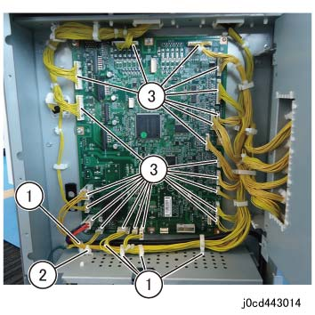
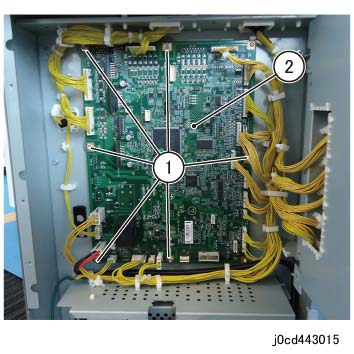

REP 43.3.1 (SCC) CDM 主电路板 
参考 PL:CDM560: PL 43.3a, CDM770: PL 43.3b
Removal

执行IOT关机步骤. 确认电源已关闭并拔掉电源插头.

静电可能损坏电气部件. 静电可能损坏电气部件. 维修时请始终佩戴腕带. If a wrist 条带 不是 可用的, touch 一些 metallic parts 在...之前 servicing to discharge the static electricity.
拆卸后下盖板. (REP 43.1.4)
打开 the IF 盖板 组件. (图 1)
拆卸螺钉（x2）.
打开 the IF 盖板 组件.

(图 1) cdw443004
释放 线束 和 断开连接器. (图 2)
释放 线束 从 卡箍 (x5).
拆卸电缆 条带.
断开连接器 (x21).

(图 2) cd443014
拆卸 CDM 主电路板. (图 3)
拆卸螺钉（x6）.
拆卸 CDM 主电路板 组件.

(图 3) cd443015
安装

当...时 changing the CDM 主电路板 用于 Interposer-installed configurations, the Interposer 纸盘 尺寸 传感器 analog 调整 值 应 loaded 到 CDM 和/与 以下步骤.
输入 the Diag 模式, change the 值 DC131[769-546] 从 [0] → [1].
出纸 Diag 和 转动 关机 然后 ON.
The DC131[769-546] 值 将 automatically 设置 从 [1] → [0] 在...之后 the analog 值 is written.